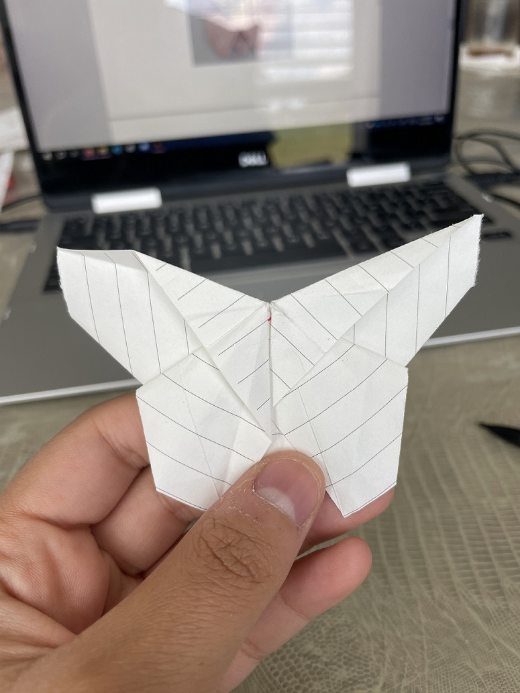
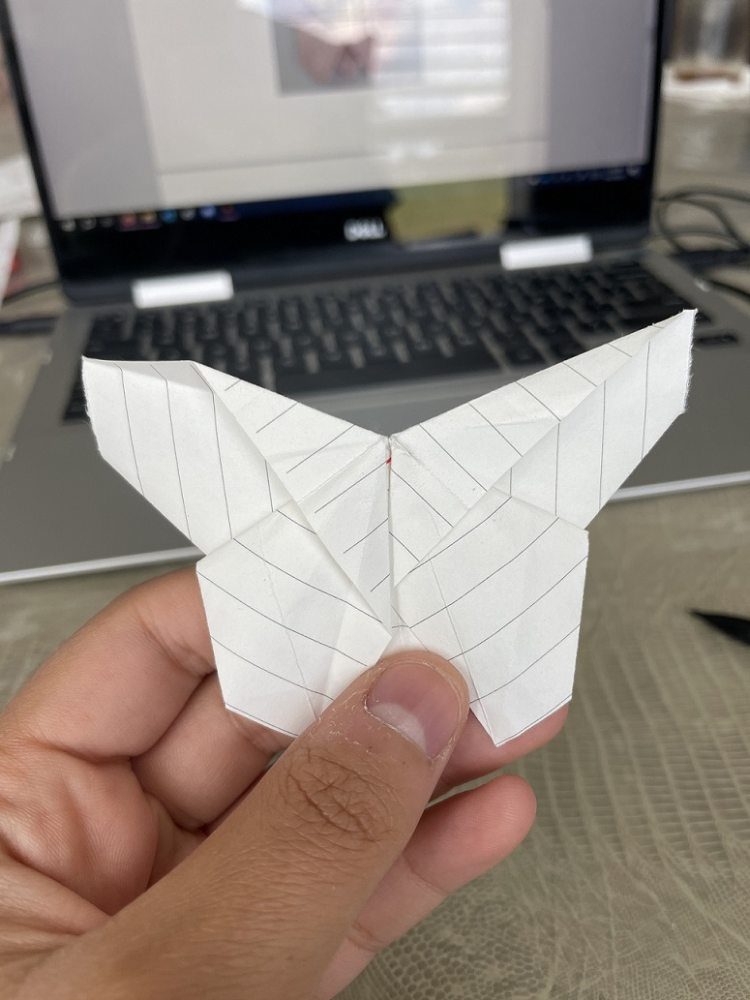
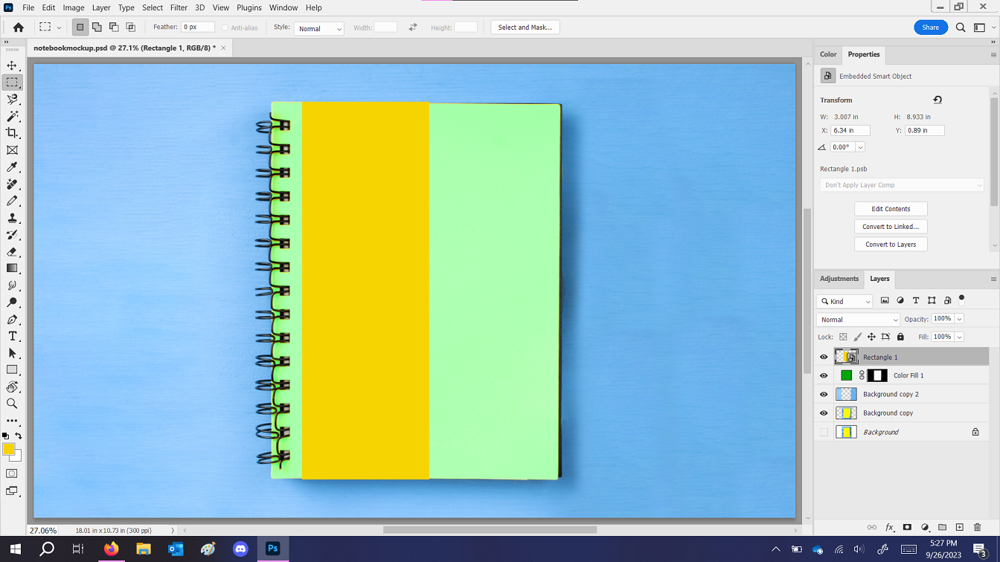
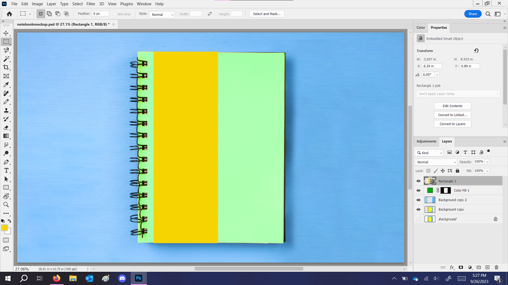

Process
Project boundaries
I started this project by brainstorming an idea for a company that would solve a problem in the world.
The problem I chose to solve was about school supplies. They're a big source of pollution and waste because of all the tons of new supplies being bought every school year.
Kids already have supplies but buy new ones because of "Back to school" campaigns.
Meanwhile teachers can't afford any for their classroom, and ask for donations from parents.
All this waste is difficult and inconvenient to recycle.
My company seeks to solve these problems by providing teachers with school supplies, through recycling their used supplies!
Naming
Here's my word map and name brainstorming. I ended up choosing the name ReAssigned, Re for recycling, renewing, doing over, and Assigned, like a school assignment, or supplies getting assigned to destinations.
Research
I started the branding process by researching the competition, school supply companies and recycling companies. They definitely were different from each other. School supply brands are fun, childish, handmade. Recycling companies generally deal with all kinds of waste, so they're thick and strong, reliable and civil. I decided my brand was going to be practical, convenient, ecofriendly, and approachable. To set my brand apart, I wouldn't use any rainbows or handwritten fonts.
Typography
My idea for the visual identity of the brand was typography-based contrast. I wanted to focus on type since school is all about reading and writing. And I could contrast the fonts, illustrations and colors based on the type to show the idea of renewal, old trash vs new supplies. So I started with type studies, looking for two fonts with strong and different personalities.
Logo
I started sketching logos, trying to conceptually tie together school, supplies, teaching, the ecosystem, etc. Lots of these unused ideas came back later as illustrations in the brand assets.

Here are some digital roughs. I liked a lot of them, but I chose to use the logo with the crumpled paper apple, because of its connection to teaching, trash, & the environment.
Collateral
With the final logo done, it was time to move onto the brand collateral. This was my brainstorming session of what to make.

Illustration
I started with the imagery and applied my idea about the style mimicking the typography. The "trash" illustrations are chunky and angular, and the "organic" illustrations are curvy and have "serifs." It's smooth sailing from here :)
 

Ad series
Then I started on the instagram ad series. I thought of tons of headline phrases, and then picked 3 that went together and had good conceptual imagery.

Package design
Next I started working on packaging. I decided to make it text-based, to show off the fonts more. I also made sure to find the mockups first, to get the right dimensions so there wouldn't be any stretching at the end. I couldn't find a good mockup for my notebook packaging, so I made my own.
 

Promo items
Next I worked on some easy brand goodies. Stickers, pens, mugs. I realize all this stuff usually ends up in the trash,
so to keep my ecofriendly vibe, I made the pens refillable.
Finally, I put everything together in a giant pdf brand guide. I made sure to elaborate on the brand purpose and personality,
and how the visuals of the brand push the concept.